核心流程 打开 → 开始训练 → 记组 → 总结


按 FitNote 产品 brief v2 的交互框架绘制：底部四 Tab（今日 / 记录 / 计划 / 我的）+ 中间凸起主动作。 视觉遵守 Apple 设计规范纪律——统一表面、0.5px 发丝分隔线、层级靠字重与灰阶、只有一个强调色， 磨砂玻璃只出现在真正有图层重叠的位置（吸顶导航 / 底部 Tab 栏 / 弹层）。
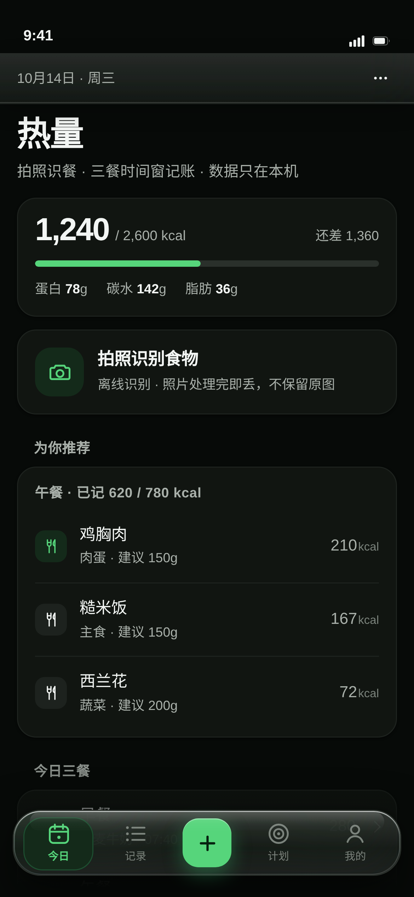
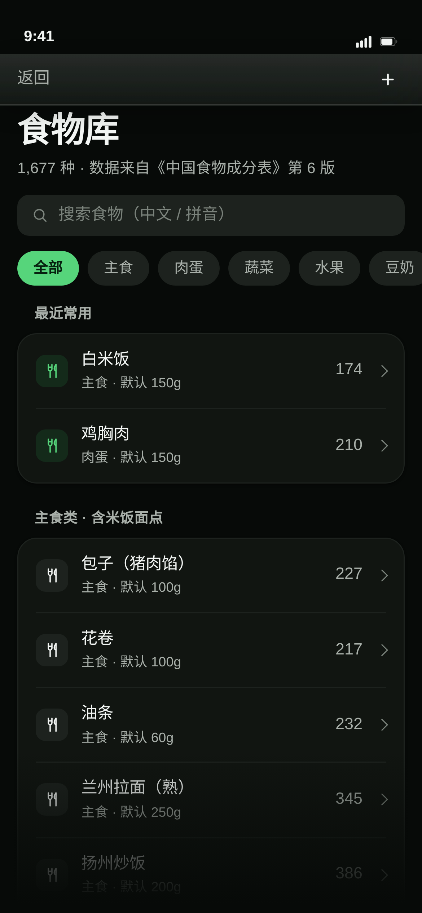


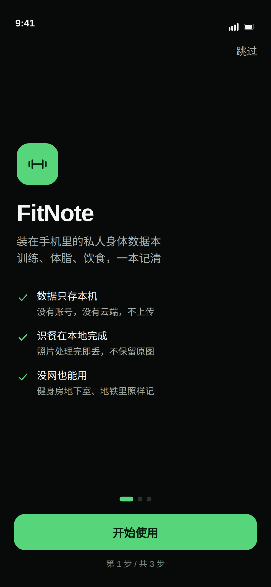
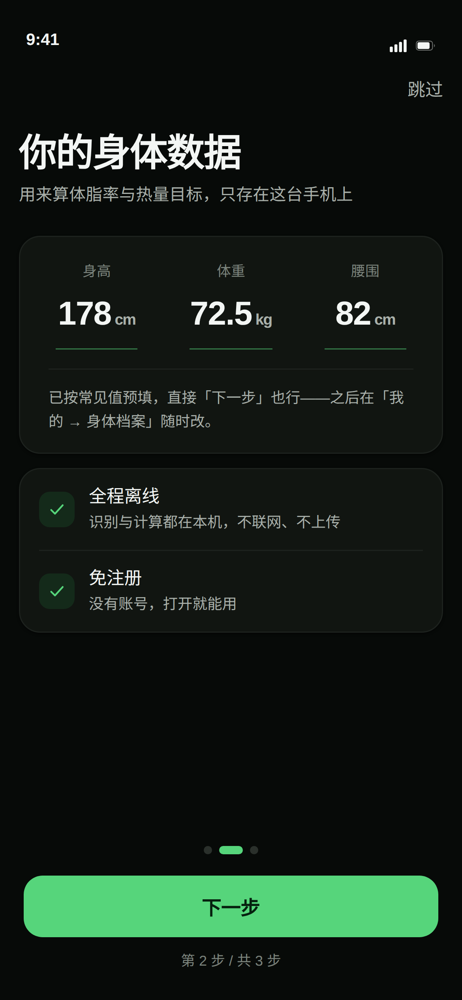
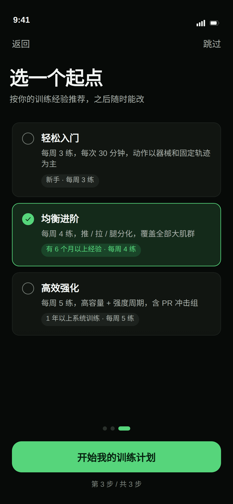
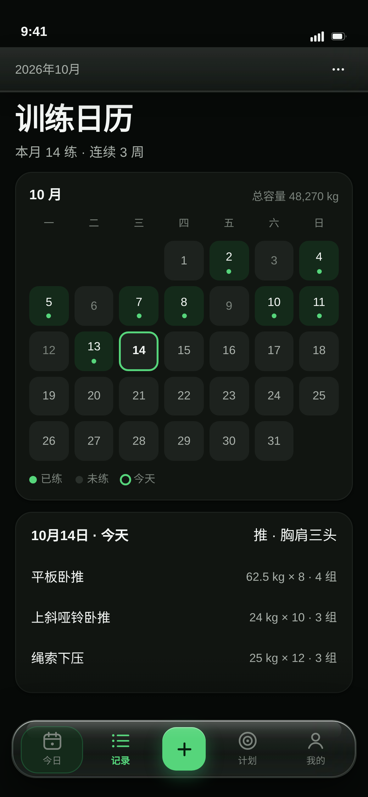
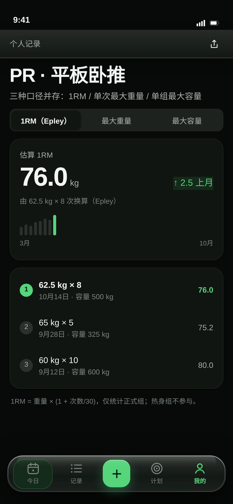
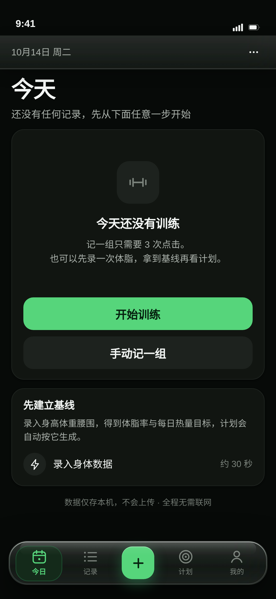
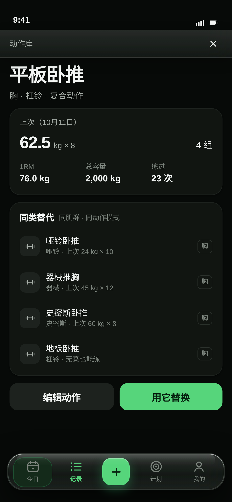
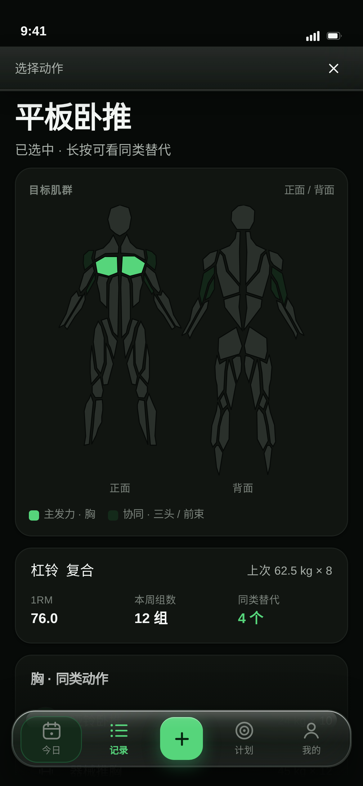
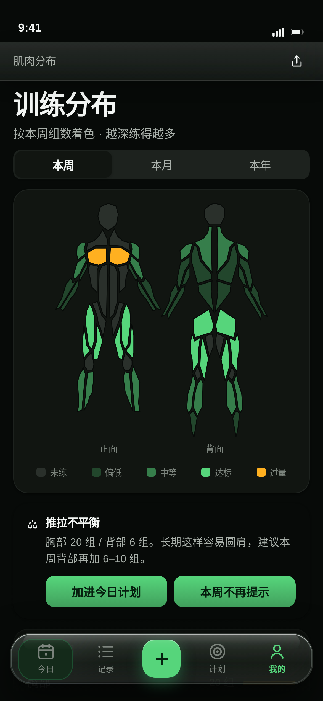


-.8px-0.2pxt1t2 · 6.9:1t3 · 3.5:1radius8pthairline#1E7A34=5.4:1、二级文本 5.2:1。另外修掉一处实现 bug：底部渐隐遮罩原本盖住了固定主按钮（把 #1E7A34 冲成 #97BEA3），已改为独立底栏，按钮不再受影响。